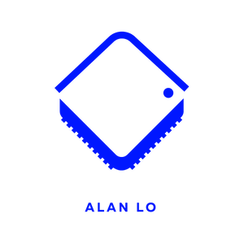
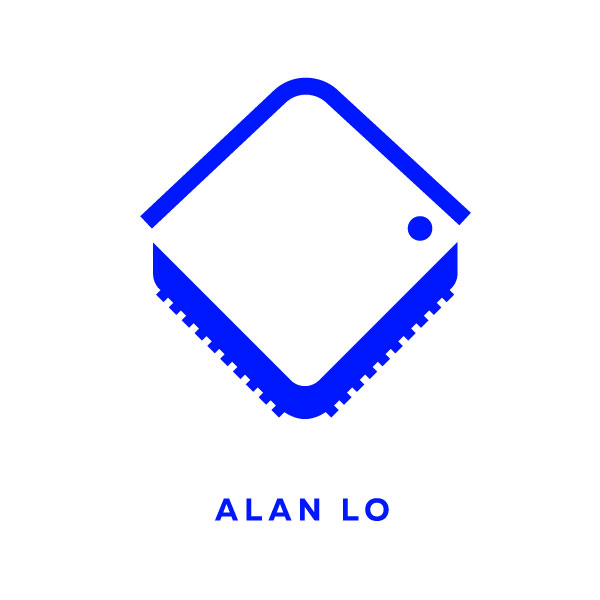

Distributed backend engineering
Real-time bidding systems, Redis Pub/Sub, REST APIs, cache invalidation, and Kubernetes orchestration for production services.

Alan Lo ResumeBackend Developer / Software Engineer
Engineer focused on distributed systems, Kubernetes services, RTB infrastructure, RAG workflows, and production platforms that stay observable, deployable, and maintainable.
Real-time bidding systems, Redis Pub/Sub, REST APIs, cache invalidation, and Kubernetes orchestration for production services.
RAG document retrieval, LLM integrations, agentic workflows, prompt systems, vector search, and practical evaluation loops.
Zero-downtime deployments, observability dashboards, incident response, CI/CD pipelines, and production debugging.
Experience
Production engineering background across real-time systems, cloud services, deployment workflows, and operational ownership.
Weedmaps
Backend work across RTB systems, Redis Pub/Sub communication, Kubernetes deployments, ArgoCD/Codefresh pipelines, and zero-downtime release practices.
Java 21, Spring Boot, Vert.x, REST APIs, real-time bidding flows, cache invalidation, and distributed service coordination.
Kubernetes, EKS, Docker, ArgoCD, Codefresh, CI/CD workflows, service configuration, and release automation.
Redis Pub/Sub, Datadog dashboards, production debugging, zero-downtime releases, incident response, and observability.
Dish Network
Engineering across live TV/video streaming systems, content ingestion services, Java-based Android work, and Kubernetes microservices.
Java, Android set-top box development, streaming UX integration, device-side debugging, and production feature delivery.
Content ingestion services, backend microservices, API integration, live TV metadata flows, and service-to-service workflows.
Kubernetes deployments, containerized services, production troubleshooting, release support, and cross-team integration work.
Selected Projects
Selected projects focus on shipped product behavior, cloud ownership, and the backend decisions behind the user experience.

Discord / AWS / Grok / RAG
EC2-hosted AI assistant operated through Discord commands. OpenClaw retrieves context from X Collections RAG, routes grounded prompts through Grok LLM, and returns context-aware responses directly back into Discord.
AWS EC2 deployment with environment-based configuration, process management, logs, and restart-aware operations.
X Collections RAG pipeline for pulling curated social context into the prompt before LLM generation.
Discord command surface for remote interaction, request routing, response formatting, and operational feedback.
Mobile / Data
React Native finance app using Supabase, Finnhub API, real-time data flows, and an AI chatbot experience.
Skill Stack
Java 21, Spring Boot, Vert.x, REST APIs, Kubernetes, Docker, AWS, EKS, ArgoCD, Codefresh, CI/CD.
PostgreSQL, Redis, Supabase, vector databases, RAG systems, LLM integration, embeddings, evaluation workflows.
TypeScript, React, React Native, Expo, Zustand, responsive HTML/CSS, SVG visualizations, Android development.
Datadog, PagerDuty, incident response, production debugging, test strategy, performance optimization, code review.
Contact